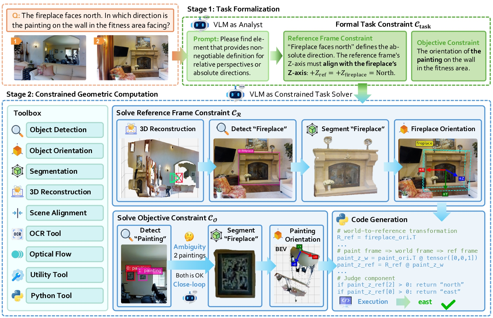
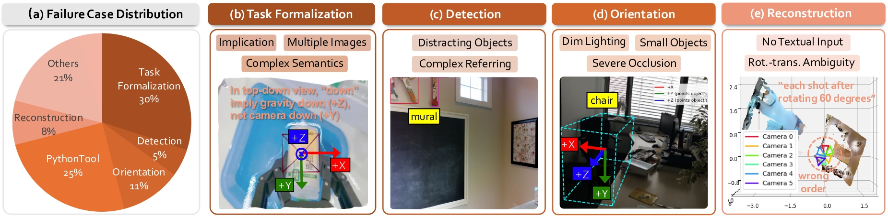

Vision Language Models (VLMs) exhibit a fundamental semantic-to-geometric gap in spatial reasoning: they excel at qualitative semantic inference but their reasoning operates within a lossy semantic space, misaligned with high-fidelity geometry. Current paradigms fail to bridge this gap. Training-based methods suffer from an "oracle paradox," learning flawed spatial logic from imperfect oracles. Tool-integrated methods constrain the final computation but critically leave the VLM's planning process unconstrained, resulting in geometrically flawed plans.
In this work, we propose Geometrically-Constrained Agent (GCA), a training-free agentic paradigm that resolves this gap by introducing a formal task constraint. Specifically, we strategically decouple the VLM's role into two stages:
1. Acting as a semantic analyst, the VLM translates the user's ambiguous query into a formal, verifiable task constraint, which defines the reference frame and objective.
2. Acting as a task solver, the VLM generates and executes tool calls strictly within the deterministic bounds defined by the constraint.
This geometrically-constrained reasoning strategy successfully resolves the semantic-to-geometric gap, yielding a robust and verifiable reasoning pathway. Comprehensive experiments demonstrate that GCA achieves SOTA performance on multiple spatial reasoning benchmarks, surpassing existing methods by ~27%.
To this end, we introduce Geometrically-Constrained Agent (GCA), a training-free agentic paradigm for geometrically-constrained spatial reasoning. As shown in Figure 2, this strategy leverages a formal task constraint, Ctask, to decouple the reasoning process into two stages:
1. Task Formalization. The VLM, acting as a semantic analyst, translates the ambiguous query and visual data into the formal, verifiable task constraint Ctask. This stage defines what to solve, establishing immutable sub-constraints: a reference frame constraint and an objective constraint.
2. Constrained Geometric Computation.strong> The VLM then, acting as a task solver, generates and executes tool calls to compute the final answer, operating strictly within the deterministic bounds defined by Ctask.
This two-stage decoupling directly bridges the semantic-to-geometric gap.

The core of GCA is the introduction of a Formal Task Constraint (Ctask) that serves as a deterministic bridge between semantics and geometry.
We define (Ctask) as a tuple containing two key sub-constraints:
1. Reference Frame Constraint that defines the coordinate system for answering the query.
2. Objective Constraint that specifies the objective to be measured within that frame.
Performance across VLMs GCA proves to be a robust architectural solution, achieving an average of 37% relative improvement across all tested models.
Notably, the magnitude of enhancement correlates with the base VLM's agentic proficiency, unlocking up to 49% gain on stronger models like Gemini-2.5-Pro.
Impact of Task Constraint Simply prompting the VLM or using unconstrained tools ("Tool (Prompt)") yields negligible improvements.
In contrast, our GCA delivers a substantial performance boost.
Error Attribution and Failure Modes A key advantage of GCA is its interpretable reasoning pathway. We conduct a detailed error attribution analysis to identify bottlenecks. Results indicate that 30% of errors stem from the initial Task Formalization stage, while the remaining 70% occur during the Geometric Computation stage.
@article{chen2025gca,
title = {Geometrically-Constrained Agent for Spatial Reasoning},
author = {Chen, Zeren and Lu, Xiaoya and Zheng, Zhijie and Li, Pengrui and He, Lehan and Zhou, Yijin and Shao, Jing and Zhuang, Bohan and Sheng, Lu},
journal = {arXiv preprint},
year = {2025},
}